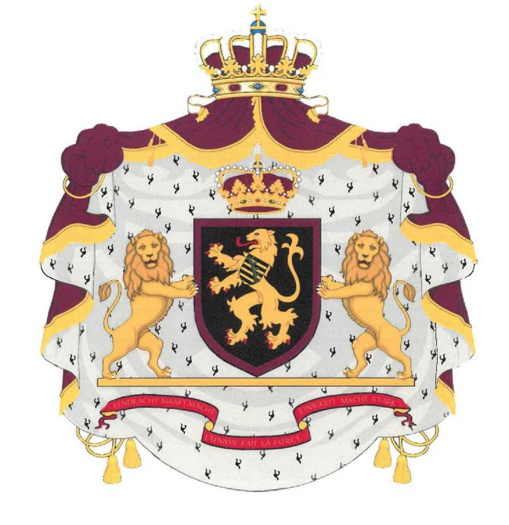

de nieuwe wapens van het Belgische koningshuis KB van 12 juli 2019 (Koninklijk besluit houdende vaststelling
van het wapen van het Koninklijk Huis en van zijn leden), zoals verschenen in het Belgische Staatsblad van 19 juli: FILIP, Koning der Belgen,
Aan allen die nu zijn en hierna wezen zullen, Onze Groet. Art. 4. De andere Prinsen of Prinsessen van België uit de mannelijke en vrouwelijke nakomelingschap in rechte lijn van Zijne Majesteit Leopold I voeren het wapenschild, ruitvormig voor de Prinsessen, zoals beschreven in artikel 1, omboord van goud.
Art. 5. De Prinsen of Prinsessen van Ons Koninklijk Huis niet bedoeld in artikel 4 voeren het wapenschild, ruitvormig voor de Prinsessen, zoals beschreven in artikel 1 omboord van purper.

Gelet op de Grondwet, de artikelen 85 en 113;
Gelet op het koninklijk besluit van 13 juli 1880 houdende vaststelling van het wapen van het Koninklijk Huis, zoals gewijzigd bij het koninklijk besluit van 17 juni 1910;
Gelet op het koninklijk besluit van 16 december 1840 "waarbij aan de vermoedelijke erfgenaam van de Kroon de titel van Hertog van Brabant en aan Prins Philippe de titel van Graaf van Vlaanderen worden toegekend", zoals gewijzigd bij het koninklijk besluit van 16 oktober 2001;
Gelet op het koninklijk besluit van 12 november 2015 betreffende de verlening van de titel van Prins of Prinses van België;
Overwegende dat als gevolg van Onze troonsbestijging het aangewezen is de regels die de wapens van het Koninklijk Huis en van zijn leden vastleggen aan te passen aan de historische en juridische evoluties die zich voordeden sinds het van kracht worden van het koninklijk besluit van 17 juni 1910;
Overwegende dat de besluiten die momenteel van kracht zijn, niet meer voldoen aan alle omstandigheden die zich nu voordoen en dat het past om te verhelpen aan de risico's op verwarring die de weg kunnen openen naar ongepaste en schadelijke heraldische gebruiken zowel in het openbaar als privé;
Op de voordracht van de Vice-Eerste Minister, Minister van Buitenlandse Zaken en Europese Zaken en Minister van Defensie,
Hebben Wij besloten en besluiten Wij :
Artikel 1. Ons wapen is in sabel een leeuw van goud, geklauwd en getongd van keel, de schouder beladen met een schild gedwarsbalkt van goud en sabel van tien stukken, een ruitkrans van sinopel schuin over alles heen.
Het schild is omringd met de ordeketen van de Leopoldsorde, geplaatst op een scepter met de leeuw van het schild en een waardigheidsteken van goud, schuinkruislings en getopt met een aanziende helm van goud, geopend en zonder traliën, gevoerd van sabel, met dekkleden van goud, gevoerd van sabel.
Helmteken: de koninklijke kroon.
De schildhouders zijn twee klimmende en aanziende leeuwen van natuurlijke kleur, elk vergezeld van een banier van goud, met franjes van hetzelfde, gedeeld in drieën van sabel, van goud en van keel.
Wapenspreuk: eendracht maakt macht - l'union fait la force - einigkeit macht stark, in letters van goud, op een lint van keel, geboord van sabel.
Het geheel is geplaatst op een mantel van purper, gevoerd van hermelijn, omboord met franjes, opgebonden met koorden eindigend in kwasten, alles van goud, overdekt met de koninklijke kroon.

bijlage 1 bij het KB
(getekend door : Sodacan)
(getekend door : Sivane Saray)
Art. 2. De Koning of Koningin die is afgetreden, voert het wapenschild zoals beschreven in artikel 1, beladen met een barensteel met drie hangers van keel, overbeladen met de koninklijke kroon; het schild getopt met een half-aanziende helm van goud, geopend en zonder traliën, gevoerd en gehecht van sabel, met dekkleden van goud, gevoerd van sabel.
Helmteken: de koninklijke kroon.
Het schild van de Koningin die is afgetreden, is ruitvormig en getopt met de koninklijke kroon.
De schildhouders met hun banieren, de wapenspreuk, de mantel en zijn kroon zijn zoals beschreven in artikel 1.
bijlage 2 bij het KB
(getekend door : Sodacan)
Art. 3. De Hertog of Hertogin van Brabant voert het wapenschild zoals beschreven in artikel 1, beladen met een barensteel met drie hangers van goud; het schild getopt zoals beschreven in artikel 2. Helmteken: de prinselijke kroon van Ons Koninklijk Huis.
Het schild van de Hertogin van Brabant is ruitvormig en getopt met de prinselijke kroon van Ons Koninklijk Huis.
De schildhouders zijn zoals beschreven in artikel 1, elk vergezeld van een banier van goud, met franjes van hetzelfde, voerend in sabel een leeuw van goud, geklauwd en getongd van keel.
De wapenspreuk en de mantel en zijn kroon zijn zoals beschreven in artikel 1.
bijlage 3 bij het KB
(getekend door : Sodacan)
Het schild is gedekt met de prinselijke kroon van Ons Koninklijk Huis.
De schildhouders, de wapenspreuk en de mantel en zijn kroon zijn zoals beschreven in artikel 1.
bijlage 4 bij het KB
(getekend door : Sodacan)
Het schild is gedekt met de prinselijke kroon van Ons Koninklijk Huis.
De schildhouders, de wapenspreuk en de mantel en zijn kroon zijn zoals beschreven in artikel 1.
bijlage 5 bij het KB
(getekend door : Sodacan)
Art. 6. Het kleine wapen van Ons Koninklijk Huis is in sabel een leeuw van goud, geklauwd en getongd van keel, de schouder beladen met een schild gedwarsbalkt van goud en sabel van tien stukken, een ruitkrans van sinopel schuin over alles heen.
Het schild is overdekt met de koninklijke kroon.
Art. 7. Het middelgroot wapen van Ons Koninklijk Huis is het kleine wapen zoals beschreven in artikel 6, vermeerderd met de ordeketen van de Leopoldsorde en gehouden door twee klimmende en aanziende leeuwen van natuurlijke kleur.
bijlage 6 en 7 bij het KB
(getekend door : Sodacan)
Art. 8. Het koninklijk besluit van 13 juli 1880 houdende vaststelling van het wapen van het Koninklijk Huis, zoals gewijzigd bij het koninklijk besluit van 17 juni 1910 wordt opgeheven.
Art. 9. De minister bevoegd voor Buitenlandse Zaken is belast met de uitvoering van dit besluit.
Gegeven te Brussel, 12 juli 2019.
FILIP
Van Koningswege :
De Vice-Eerste Minister en Minister van Buitenlandse Zaken en Europese Zaken en Minister van Defensie,
D. REYNDERS
link naar KB in Belgisch Staatsblad
link naar KB in Belgisch Staatsblad (beeld)
link naar KB op OpenJustice.be
Voor de duidelijkheid: het wapen van België is niet gewijzigd met dit KB.

(getekend door : Sodacan)
(getekend door : Sivane Saray)
Verenigd Wapen van Koning Filip en Koningin Mathilde :

rechts (heraldisch links): Mathilde d'Udekem d'Acoz: sabel, drie hellende klophamers van goud, 2 en 1, een zoom van keel
OUD Verenigd Wapen van Koning Albert II en Koningin Paola :

rechts (heraldisch links): Paola di Ruffo di Calabria: sabel, een ingehoekt schildhoofd van zilver beladen met drie schelpen van natuurlijke kleur